Redis 是著名的跨平台 NoSQL 数据库，以其极高的性能和强大的数据结构支持闻名。本文将介绍支撑 Redis 高性能的原因之一：底层数据结构。一览数据结构之美。
本篇将涉及C语言，请确保您拥有C语言相关基础与计算机底层知识
RedisObject (robj)
robj 是 Redis 对象的起点，所有的数据结构都封装到了 robj 之中。
其源码如下：
struct redisObject {
unsigned type:4;
unsigned encoding:4;
unsigned lru:LRU_BITS;
int refcount;
void *ptr;
};
结构分析
type
type 表示对象的类型，占用4bit存储空间。目前包含：REDIS_STRING(字符串)、REDIS_LIST (列表)、REDIS_HASH(哈希)、REDIS_SET(无序集合) 和 REDIS_ZSET(有序集合)。
encoding
encoding 表示对象的内部编码，占用4bit存储空间。
Redis 的每种数据类型都至少有两种编码格式。
例如，对于 REDIS_STRING，有 INT, EMBSTR ,RAW 三种编码格式。
通过将 encoding 封装在 robj 中，Redis 可以根据不同场景快速获取编码格式，并针对该场景决定是否优化编码。
lru
lru 全称 Least Recently Used(最近最少使用)，记录对象最后一次被访问的时间。
其占用的内存空间不定，4.0 版本占用 24bit，2.6 版本占用 22bit。
该值主要是用于配合 LRU 算法对内存进行优化。
当 Redis占用内存达到 maxmemory 配置后，会根据LRU删除最近最少使用的对象。
refcount
refcount 全称 Reference Count(引用计数)，主要用于记录当前对象被引用的次数，以判断该对象何时可以回收。
当 refcount 为0时，代表对象未被引用，可安全回收。
ptr
ptr 全称 Pointer (指针)，这里是 robj 封装的数据结构的指针。
如果这里的数据是数字，则直接存储数字，其他对象则正常存储。
综上计算，robj 的大小一般为 4bit + 4bit + 24bit + 4Byte + 8Byte，即：16字节。
REDIS_STRING(SDS)
SDS 全称 Simple Dynamic String(简单动态字符串)，是专为 Redis 设计的简易字符串实现。
Redis 并未采用 C 语言传统字符串 char*，而是自己设计了一套字符串实现标准。
传统字符串的缺陷
C 语言字符串实际上就是一个以'\0'结尾的字符数组。
例如：
char* myName = "ErickRen";
的结构即为：
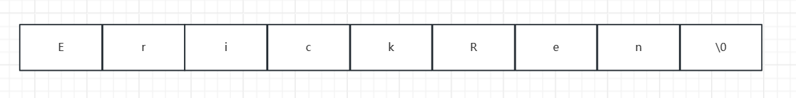
该结构有个弊端，如果字符串内部有'\0'，则C语言会误认为该字符串结束。
这个限制使得传统C语言字符串只能保存文本数据，不能保存图片、音频、视频等的二进制数据。
此外，C语言标准库中字符串操作函数非常不安全，一不小心就会缓冲区溢出。
例如，当使用strcat("Erick", "Ren")函数拼接字符串时，C语言并不会检查该字符串是否有足够的空间，而是会直接操作。
而当C语言每次使用strlen()函数时，实际上是将字符串从头至尾遍历一遍，遇到'\0'为止，每次获取字符串长度的时间复杂度都是O(n)。
C语言的确实现了大部分的字符串函数，但这些函数风险太高，并不适合用来构建业务。
SDS
而为了业务开发，Redis 作者构建了一套新的字符串标准，简称为 SDS。
SDS一共有 5 个实现，都为 sdshdr (Simple Dynamic Strings Header) 系列，分别为sdshdr5, sdshdr8, sdshdr16, sdshdr32, sdshdr64：
/* Note: sdshdr5 is never used, we just access the flags byte directly.
* However is here to document the layout of type 5 SDS strings. */
struct __attribute__ ((__packed__)) sdshdr5 {
unsigned char flags; /* 3 lsb of type, and 5 msb of string length */
char buf[];
};
struct __attribute__ ((__packed__)) sdshdr8 {
uint8_t len; /* used */
uint8_t alloc; /* excluding the header and null terminator */
unsigned char flags; /* 3 lsb of type, 5 unused bits */
char buf[];
};
struct __attribute__ ((__packed__)) sdshdr16 {
uint16_t len; /* used */
uint16_t alloc; /* excluding the header and null terminator */
unsigned char flags; /* 3 lsb of type, 5 unused bits */
char buf[];
};
struct __attribute__ ((__packed__)) sdshdr32 {
uint32_t len; /* used */
uint32_t alloc; /* excluding the header and null terminator */
unsigned char flags; /* 3 lsb of type, 5 unused bits */
char buf[];
};
struct __attribute__ ((__packed__)) sdshdr64 {
uint64_t len; /* used */
uint64_t alloc; /* excluding the header and null terminator */
unsigned char flags; /* 3 lsb of type, 5 unused bits */
char buf[];
};
从注释信息来看，sdshdr5 从未使用过，但**存疑**。不在本文讨论范围内。
除了 sdshdr5 之外，其他的结构都有四个共同结构：len, alloc, flags和buf[]。
结构分析
len
len 存储了该 SDS 长度，在通过函数获取字符串长度时，可以直接返回该值，将时间复杂度优化到了O(1)。
alloc
alloc 是分配给字符数组的空间长度，该变量是为了在修改字符串时，通过alloc - len来推导出剩余的空间大小，以判断是否需要扩容操作。alloc 和通过 alloc 推导剩余空间大小是解决缓冲区溢出的根本。
flags
flags 主要用来表示不同类型的 SDS 实现。即表明该字符串是上述五种实现的何种。
buf[]
buf[] 是一个字符数组，用来保存实际数据。
用 SDS 标准实现的字符串，不会存在上述的缓冲区溢出问题，可以存储任意二进制数据并且获取字符串长度的时间复杂度为 O(1)。
扩容机制
上面提到 SDS 不存在缓冲区溢出问题，这是因为 SDS 在数据量不足时会进行自动扩容。
当操作字符串时，通过公式alloc - len即可获取当前剩余空间，以判断是否要进行扩容。
hisds hi_sdsMakeRoomFor(hisds s, size_t addlen) {
... ...
// s目前的剩余空间已足够，无需扩展，直接返回
if (avail >= addlen)
return s;
//获取目前s的长度
len = hi_sdslen(s);
sh = (char *)s - hi_sdsHdrSize(oldtype);
//扩展之后 s 至少需要的长度
newlen = (len + addlen);
//根据新长度，为s分配新空间所需要的大小
if (newlen < HI_SDS_MAX_PREALLOC)
//新长度<HI_SDS_MAX_PREALLOC 则分配所需空间*2的空间
newlen *= 2;
else
//否则，分配长度为目前长度 + 1MB
newlen += HI_SDS_MAX_PREALLOC;
...
}
如果该 SDS 小于 1MB，那么就将它的容量翻倍。
如果该 SDS 大于 1MB，那么每次扩容就为它的容量加上1MB。
不同实现的差异
前文提到，sdshdr 中有 flags 存储 sds 的实现。
这五种实现的主要差异在len和alloc的数据类型。
例如 sdshdr16 和 sdshdr32：
struct __attribute__ ((__packed__)) sdshdr16 {
uint16_t len;
uint16_t alloc;
unsigned char flags;
char buf[];
};
struct __attribute__ ((__packed__)) sdshdr32 {
uint32_t len;
uint32_t alloc;
unsigned char flags;
char buf[];
};
sdshdr16 中的 len 和 alloc 都是uint16_t，长度和分配空间最多只有 216。
而 sdshdr32 为uint32_t，可以存储更多数据。
此举是为了能灵活保存不同大小的字符串，从而有效节省内存空间。比如，在保存小型字符串时，结构头占用空间会更少。
编译优化
sdshdr 声明了 __attribute__ ((packed)) ，它是为了告诉编译器取消结构体在编译过程中的优化对齐，按照实际占用字节数进行对齐。
以 sdshdr8 举例，如果不进行此优化，则实际的结构体大小为：
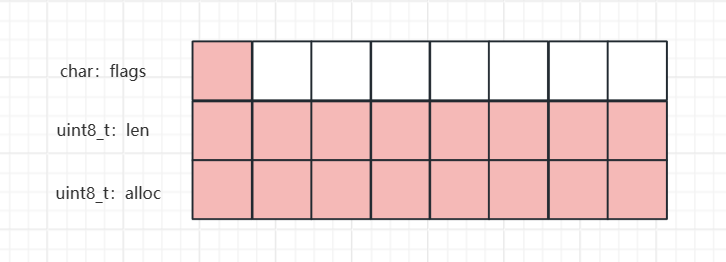
而进行了优化后，占用的内存即为：
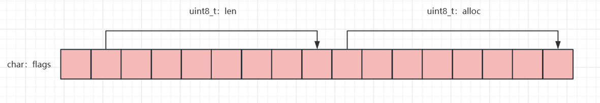
节省了一部分内存空间。
REDIS_LISTNODE
REDIS_LISTNODE 本质上与 Java 的 LinkedList 一致，为链表，是基本的线性结构。C 语言原生没有对链表的支持，Redis 对链表进行了实现。
listNode
typedef struct listNode {
struct listNode *prev;
struct listNode *next;
void *value;
} listNode;
listNode 的结构较为简单，本质上只有三部分：prev(前节点)，nex(后节点)，value(值)。
其中前后节点分别为一个新的 listNode。
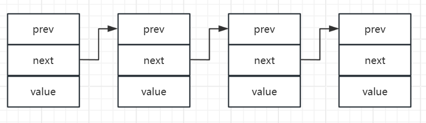
list
typedef struct list {
listNode *head;
listNode *tail;
void *(*dup)(void *ptr);
void (*free)(void *ptr);
int (*match)(void *ptr, void *key);
unsigned long len;
} list;
list 是对 listNode 的一个封装。提供了链表头指针head、链表尾节点tail、链表节点数量len、以及可以自定义实现的 dup、free、match 函数。
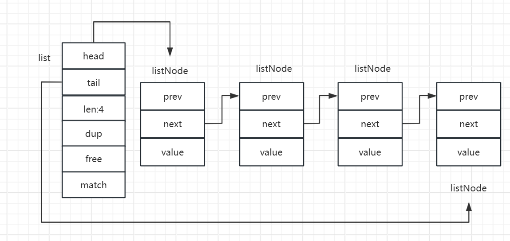
REDIS_LISTNODE的优势与缺陷
优势
- listNode 中有两个指向前后节点的指针，这意味着 listNode 不需要连续的内存空间。
- listNode 中用 len 存储了链表长度，这样获取链表长度的时间复杂度为
O(1)。 - listNode 链表节使用
void*指针保存节点值，并且可以通过 list 结构的dup、free和match函数指针为节点设置该节点类型特定的函数，因此链表节点可以保存各种不同类型的值。
缺点
- 链表每个节点之间的内存都是不连续的，导致其无法很好利用 CPU 缓存。能很好利用 CPU 缓存的数据结构就是数组，因为数组的内存是连续的，这样就可以充分利用 CPU 缓存来加速访问。
- 保存一个链表节点的值都需要一个链表节点结构头的分配，内存开销较大，无法随机读取。数组只需要下标访问即可。
正因如此，Redis 3.0 的 List 对象在数据量比较少的情况下，会采用zipList作为底层数据结构的实现，它的优势是节省内存空间，并且是内存紧凑型的数据结构。
Redis 5.0 设计了新的数据结构 listpack，沿用了压缩列表紧凑型的内存布局。在最新的 Redis 版本，将 Hash 对象和 Zset 对象的底层数据结构替换成由 listpack 实现。
REDIS_ZIPLIST
zipList(压缩列表) 是一种紧凑型的数据结构，占用一片连续的内存，本质上是一个字节数组。能提高 CPU 缓存的利用效率，并且针对不同数据结构进行不同编码，节省内存开销。
编码结构
zipList 的字节数组主要由5个部分组成：zlbytes、zltail、zllen、zltail和entry。
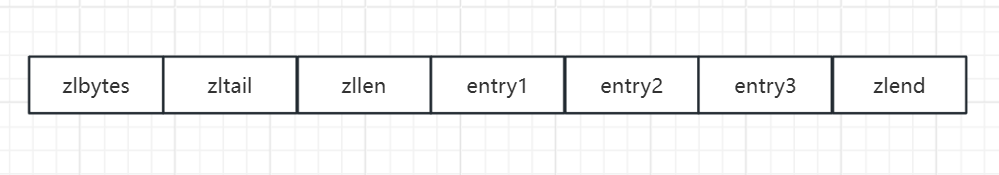
- zlbytes 记录了整个zipList占用的内存大小。
- zltail 记录了整个zipList尾结点距离起始地址的字节数，也可认为是列表尾的offset(偏移量)。
- zllen 记录了压缩列表的
entry数量。 - zlend 记录了 zipList 的结束点，固定值为 0xFF(十进制下的255)。
entry
entry 是 zipList 的有效存储模块，其中 entry 又分为三部分：prevlen、encoding和data。
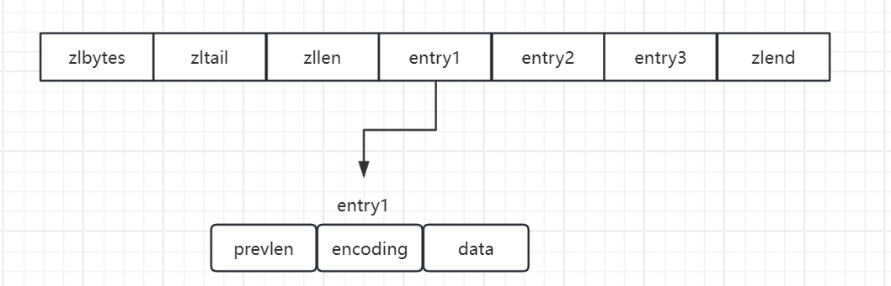
- prevlen 记录了前一个 entry 的长度，目的是为了实现从后向前遍历。
- encoding 记录了当前节点实际数据的类型和长度，类型主要有两种：字符串和整数。
- data 记录了当前节点的实际数据，类型和长度都由
encoding决定。
对于 entry 来说：
如果前一个 entry 的长度小于 254 字节，那么prelen就会采用 1 个字节。
如果前一个 entry 的长度大于 254，prelen就采用 5 个字节：第一个字节会被设置为 0xFE(十进制的254），之后的四个字节则用于保存前一个节点的长度。
对于 encoding 来说：
encoding 的空间大小跟数据是字符串还是整数，以及字符串的长度有关。
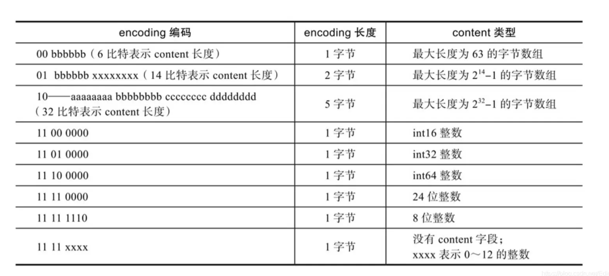
- 如果当前节点的数据是整数，则 encoding 会使用 1 字节的空间进行编码，也就是 encoding 长度为 1 字节。通过 encoding 确认了整数类型，就可以确认整数数据的实际大小了，比如如果 encoding 编码确认了数据是 int16 整数，那么 data 的长度就是 int16 的大小。
- 如果当前节点的数据是字符串，根据字符串的长度大小，encoding 会使用 1 字节/2字节/5字节的空间进行编码，encoding 编码的前两个 bit 表示数据的类型，后续的其他 bit 标识字符串数据的实际长度，即 data 的长度。
连锁更新问题
连锁更新问题是指：在极端情况下，在修改 entry 的 data 时，data 过长，zipList 需要重新分配内存空间。
当新插入的元素较大时，可能会导致后续元素的 prevlen 占用空间都发生变化，从而引起连锁更新问题，导致每个元素的空间都要重新分配，造成访问压缩列表性能的下降。
该问题主要是因为 prevlen 会根据前一个节点的长度进行不同的空间大小分配。
如果前一个节点的长度小于 254 字节，那么 prevlen 属性需要用 1 字节的空间来保存这个长度值；如果前一个节点的长度大于等于 254 字节，那么 prevlen 属性需要用 5 字节的空间来保存这个长度值。
现在设一个 zipList 中有多个连续且长度在 250～253 之间的节点，这些节点的长度都小于254，prelen 使用1个字节的空间保存长度值。我们设这第一个元素为E1。
这时，如果将一个长度大于等于 254 字节的新节点加入到压缩列表的表头节点。因为原E1的prelen只有一个字节，无法保存新插入的结点，那么此时prelen需要从1扩大到5字节。
而此时E1的长度也大于了 254，那么后续节点都需要逐步扩大 prelen，扩大 prelen 又导致了新的后节点变化。像多米诺骨牌一样产生的连续多次空间扩展。
反之，在删除节点时也可能导致连锁更新。
因为连锁更新在最坏情况下需要对压缩列表执行 N 次空间重分配操作，而每次空间重分配的最坏复杂度为 O(N)，所以连锁更新的最坏复杂度为 O(N^2)。
但因为大规模连锁更新的情况过于极端，且小规模连锁更新并不影响性能，所以不必过于担心。
Redis 也并未在 zipList 中对此情况提出相应解决方案。
为什么要加入 prelen
zipList的 entry 保存 prevlen 主要是为了实现节点从后往前遍历，知道前一个节点的长度，就可以计算前一个节点的偏移量。
如果直接保存len，也可以从后往前遍历，不过实现起来较为复杂。
Redis 针对连锁更新问题，提出了listPack作为解决方案。
在 listPack中，不再保存 prelen，而是自身长度 len。listPack 从当前列表项起始位置的指针开始，向左逐个字节解析，得到前一项的 entry-len 值。
REDIS_SKIPLIST
skipList，即：跳表，或者叫跳跃表。skiplist 的优势是能支持平均 O(logN) 复杂度的节点查找。
用一句话来说：skiplist 就是一个有着索引的 list。
编码结构
简单理解
简单来说，skipList 有多层“索引”以加快查找速度：
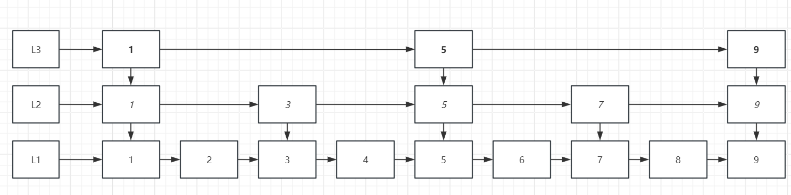
其中 L1、L2 和 L3 都是一个 list。
当查找8时，从 L3 查找到 5，再从 L2 从 5 开始查找，查找到 7，再 L3 中从 7 开始查找，最终查找到 8。
这样，原本需要 8 次查找的操作直接简化到了 4 次。
从源码理解
typedef struct zskiplist {
struct zskiplistNode *header, *tail;
unsigned long length;
int level;
} zskiplist;
typedef struct zskiplistNode {
sds ele;
double score;
struct zskiplistNode *backward;
struct zskiplistLevel {
struct zskiplistNode *forward;
unsigned long span;
} level[];
} zskiplistNode;
Redis 只有 Zset 对象的底层实现用到了跳表。
Zset 需要你填入元素和权重，其中权重就是跳表用于排序的根源，即 listNode 中的 score。
zskipList 中的 level 即为跳表的层级， Zset 的元素存储在 listNode 中的 ele 中，以 sds 形式存储。
SkipList 的层级设计
前文提到，SkipList 相邻两层的节点数量的比例会影响跳表的查询性能。
当设计不合理时，跳表的查询性能可能会降低到 O(n)。
跳表的相邻两层的节点数量最理想的比例是 2:1，查找复杂度可以降低到 O(logN)。
但Redis所提出的解决方案是：跳表在创建节点的时候，随机生成每个节点的层数，并没有严格维持相邻两层的节点数量比例为 2 : 1 的情况。
skipList 在创建节点时候，会生成范围为 [0-1] 的一个随机数，如果这个随机数小于 0.25（相当于概率 25%），那么层数就增加 1 层，然后继续生成下一个随机数，直到随机数的结果大于 0.25 结束，最终确定该节点的层数。
// 创建一个空表头的跳表
zskiplist *zslCreate(void) {
int j;
zskiplist *zsl;
// 尝试分配内存空间
zsl = zmalloc(sizeof(*zsl));
// 初始化level和length
zsl->level = 1;
zsl->length = 0;
// 调用下面的方法zslCreateNode, 传入的参数有数组长度。
// 分数0，对象值NuLL
// 这一步就是创建管理所有节点的数组
// 并且设置表头的头头指针为此对象的地址
zsl->header = zslCreateNode(ZSKIPLIST_MAXLEVEL,0,NULL);
// 为这32个数组赋值前指针forward和跨度span
for (j = 0; j < ZSKIPLIST_MAXLEVEL; j++) {
zsl->header->level[j].forward = NULL;
zsl->header->level[j].span = 0;
}
// 设置尾指针
zsl->header->backward = NULL;
zsl->tail = NULL;
// 返回对象
return zsl;
}
zskiplistNode *zslCreateNode(int level, double score, sds ele) {
zskiplistNode *zn =
zmalloc(sizeof(*zn)+level*sizeof(struct zskiplistLevel));
zn->score = score;
zn->ele = ele;
return zn;
}
ZSKIPLIST_MAXLEVEL 定义的是最高的层数，Redis 7.0 定义为 32，Redis 5.0 定义为 64，Redis 3.0 定义为 32。
为什么要用跳表而不用平衡树？
对于这个问题，Redis 作者 antirez 如是回答：
There are a few reasons:
- They are not very memory intensive. It’s up to you basically. Changing parameters about the probability of a node to have a given number of levels will make then less memory intensive than btrees.
- A sorted set is often target of many ZRANGE or ZREVRANGE operations, that is, traversing the skip list as a linked list. With this operation the cache locality of skip lists is at least as good as with other kind of balanced trees.
- They are simpler to implement, debug, and so forth. For instance thanks to the skip list simplicity I received a patch (already in Redis master) with augmented skip lists implementing ZRANK in O(log(N)). It required little changes to the code.
简单来说：
1.B 树和 SkipList 不是内存密集型数据模型，用什么取决于你，只不过改变节点级数的时候 SkipList 可以比树用更少的内存。
2.Redis 经常需要执行ZRANGE或ZREVRANGE命令，即作为链表遍历跳表。通过此操作，跳表的缓存局部性至少与其他类型的平衡树一样好。
3.SkipList 实现简单，社区维护起来方便。比如社区提交来一个用O(logN)的ZRANK实现，只需要改动少量代码就能完成。
详细来说：
- 从内存占用上来比较，跳表比平衡树更灵活。平衡树每个 Node 固定包含 2 个指针（指向左右子树），而跳表每个节点包含的指针数目平均为 1/(1-p)，具体取决于参数 p 的大小。如果像 Redis 里的实现一样，取 p=1/4，那么平均每个节点包含 1.33 个指针，比树占用的内存更少。
- 在做范围查找的时候，跳表比平衡树操作要简单。在平衡树上，我们找到指定范围的小值之后，还需要以中序遍历的顺序继续寻找其它不超过大值的节点。如果不对树进行改造，中序遍历并不容易实现。而在跳表上进行范围查找就非常简单，只需要在找到小值之后，对第 1 层链表进行遍历就可以实现。
- 从算法实现难度上来比较，跳表比平衡树要简单得多。平衡树的插入和删除操作可能引发子树的调整，逻辑复杂，而跳表的插入和删除只需要修改相邻节点的指针，操作简单快速。
REDIS_INTSET
intSet 即为：整数集合，整数集合本质上是一块连续内存空间。
编码结构
typedef struct intset {
// 编码方式
uint32_t encoding;
// 集合包含的元素数量
uint32_t length;
// 保存元素的数组
int8_t contents[];
} intset;
前两个属性encoding和length都用于规划这个 set。本质上这个 set 的本体是contents。
虽然 contents 被声明为int8_t类型的数组，但是实际上 contents 数组并不保存任何 int8_t 类型的元素，contents 数组的真正类型取决于 intset 结构体里的 encoding 属性的值。
- 如果 encoding 属性值为 INTSET_ENC_INT16，那么 contents 就是一个 int16_t 类型的数组，数组中每一个元素的类型都是 int16_t；
- 如果 encoding 属性值为 INTSET_ENC_INT32，那么 contents 就是一个 int32_t 类型的数组，数组中每一个元素的类型都是 int32_t；
以此类推，不同类型的 contents 数组，意味着数组的大小也会不同。
contents 的升级
前文提到，contents 由 encoding 进行编码。而 encoding 编码有多种。
如果现在 contents 正由int16_t编码，而突然插入int32_t，这时 contents 需要升级。
即：按新元素的类型（int32_t）扩展 contents 数组的空间大小，然后才能将新元素加入到整数集合里。
在升级时，将所有数字全部转换为对应元素类型，并从后往前整理数据。
在 contents 升级时，依然要维持整数集合的有序性。
为什么要contents升级
如果统一使用int64_t来保存数据，自然没这么多事，用起来也方便。
但是在业务里有很多情况下用不到这么大的数据量，所以根据需求升级可以节省内存资源。
conten ts不支持降级。
REDIS_QUICKLIST
quickList(快速列表) 是 Redis 对 List 对象的一个实践。
在 Redis 3.0 之前，List 对象的底层数据结构是双向 listNode 或者 zipList 。
在 Redis 3.2 更新中，List 对象的底层改由 quickList 实现。
前文提到，zipList 当元素个数比较多时，每当修改元素时，必须重新分配存储空间，对执行效率影响很大。
quickList 本质上是 listNode + zipList 的组合，quickList 的顶层设计就是一个链表，链表的每个节点就是一个 zipList。
从源码分析结构
// QuickList顶层链表
typedef struct quicklist {
// 链表头
quicklistNode *head;
// 链表尾
quicklistNode *tail;
// 所有zipList总元素个数
unsigned long count;
// node个数
unsigned long len;
...
} quicklist;
// QuickList节点设计
typedef struct quicklistNode {
// 前指针
struct quicklistNode *prev;
// 后指针
struct quicklistNode *next;
// 该节点所指向的zipList指针
unsigned char *zl;
// zipList的的字节大小
unsigned int sz;
// zipList的元素个数
unsigned int count : 16; //ziplist中的元素个数
....
} quicklistNode;
用图表达：
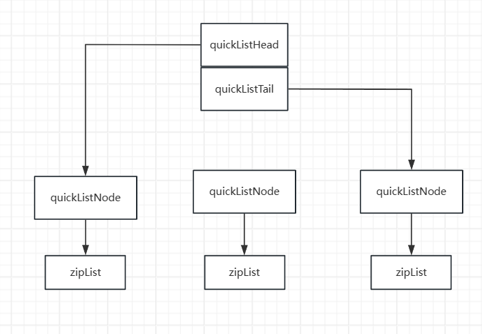
在向 quicklist 添加一个元素的时候，会先检查插入位置的压缩列表是否能容纳该元素，如果能容纳就直接保存到 quicklistNode 结构里的压缩列表，如果不能容纳，才会新建一个新的 quicklistNode 结构。
quicklist 会控制 quicklistNode 结构里的压缩列表的大小或者元素个数，来规避潜在的连锁更新的风险，但是这并没有完全解决连锁更新的问题。
REDIS_LISTPACK
Redis 在5.0设计了一个新的数据结构：listPack，用于替代 zipList。
它最大特点是 listpack 中每个 entry 不再包含前一个节点的长度。
zipList 正因需要保存前一个节点的长度字段，才导致了连锁更新的隐患。
在 Redis7.0 版本中已经用 listPack 重构。
结构设计
在每个 Entry 中，又包含如下结构：
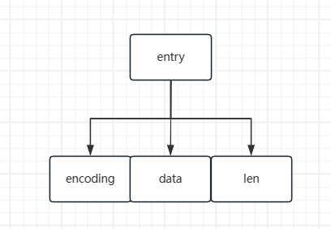
- encoding 用于定义该元素的编码类型，会对不同长度的整数和字符串进行编码；
- data 存放实际数据；
- len 代表 encoding + data 的总长度；
listPack 之于 zipList 最大的改变就是不再记录前一个节点的字段长度，这样无论节点如何变化，每个节点都不再因为其他节点的更新而连锁更新。
listPack 如何逆向遍历
uint64_t lpDecodeBacklen(unsigned char *p) {
uint64_t val = 0;
uint64_t shift = 0;
do {
val |= (uint64_t)(p[0] & 127) << shift;
if (!(p[0] & 128)) break;
shift += 7;
p--;
if (shift > 28) return UINT64_MAX;
} while(1);
return val;
}
从当前列表项起始位置的指针开始，向左逐个字节解析，得到前一项的 entry-len 值。
REDIS_HASH
Hash 本质上就是一个保存若干键值对的数据结构，类似于 Java 中的 HashMap。
同样的，hash 中只能存在一个独一无二的 key，所有的操作都围绕 key 展开。
hash 的最大优点在于其可以提供最佳O(1)的查询时间复杂度。
通过一段原始数据 key，通过特定算法将其哈希值转化为数组下标，通过相同的算法处理相同的值可以计算相同的索引，所以只需要 O(1) 时间复杂度就可以查询到 key。
但有一片阴云一直笼罩在哈希表之上：哈希冲突。
哈希冲突
前文提到，哈希表通过算法将 key 转化为下标，可以做到相同 key，一定能有相同的下标值。
但 key 是无限的，下标值是有限的。无限对有限的映射，则必定有不同的 key 指向相同的下标，两个 key 抢占一个下标，就造成了哈希冲突。
哈希冲突一般有多重解决方法，Redis 采用链式哈希解决。
简单来说，链式哈希遇到哈希冲突，则将数组元素转化为一个链表，通过链表将冲突的元素连接起来。
在链表中，查询时间复杂度为O(n)，这也是为什么要说 hash 最佳时间复杂度为O(1)。
结构设计
typedef struct dictht {
// hash数组
dictEntry **table;
// hash大小
unsigned long size;
// 大小掩码，用于计算索引值
unsigned long sizemask;
// 已有的节点数量
unsigned long used;
} dictht;
typedef struct dictEntry {
// 键值对中的键
void *key;
// 键值对中的值
union {
void *val;
uint64_t u64;
int64_t s64;
double d;
} v;
// 指向下一个哈希表节点
struct dictEntry *next;
} dictEntry;
在 dictEntry 的 v 中，是一个联合体 union，里面存放一个指针，int 和 double。
这样的好处是如果值是一个整数或者小数，可以直接嵌入在 dictEntry 中而不需要指针。
rehash操作
typedef struct dict {
…
// 两个Hash表，交替使用，用于rehash操作
dictht ht[2];
…
} dict;
在正常服务请求阶段，插入的数据，都会写入到哈希表 1，此时的哈希表 2 并没有被分配空间。
随着数据逐步增多，触发了 rehash 操作，这个过程分为三步：
- 给表 2 分配空间，一般会是表 1 的 2 倍；
- 将表 1 的数据迁移到表 2 中；
- 迁移完成后，释放表 1 的空间，并把表 2设置为表 1，然后在表 2 新创建一个空白的表，为下次 rehash 做准备。
但如果表 1 中数据量非常大，那么在迁移操作时会耗费大量计算资源，可能会阻塞Redis正常业务。
为了避免这种情况，Redis 提出 渐进式哈希 作为解决方案。
渐进式哈希的核心是将数据迁移操作分步进行，而不是一口气完成。
在给表 2 分配空间后，每次哈希表的元素进行操作(增删改查)时，Redis会将被操作元素索引上的所有元素(因为可能是链表)迁移到表2上。
随着操作越来越多，终有一刻表 1 能把所有数据都迁移到表 2 上，完成渐进式哈希操作。
何时触发rehash
我们首先要明白一个概念：Load Factor(负载因子)。
负载因子 = 哈希表已存节点数 / 哈希表大小
以下两种条件满足一种，哈希表就会进行 rehash 操作：
- 当负载因子大于等于 1 ，并且 Redis 没有执行 RDB 快照或没有进行 AOF 重写的时候，就会进行 rehash 操作。
- 当负载因子大于等于 5 时，此时说明哈希冲突非常严重了，不管有没有有在执行 RDB 快照或 AOF 重写，都会强制进行 rehash 操作。